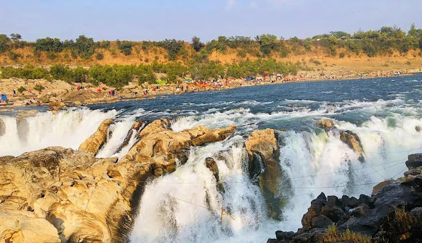

Visit Dhuandhar waterfall
Dhuandhar Falls in Bhedaghat is a stunning 30-meter waterfall on the Narmada River, where the river rushes through the famous Marble Rocks before plunging into a smoky cascade.

Visit Yogini Temple
The temple is the largest of the circular yogini temples, some 125 feet in diameter

See Balancing rock
Balancing Rock is a natural wonder near Madan Mahal Fort in Jabalpur, where a massive boulder rests precariously on a small contact point. This unique volcanic formation has withstood time and tremors, making it a must-see for geology lovers and photographers.